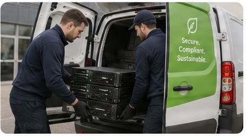
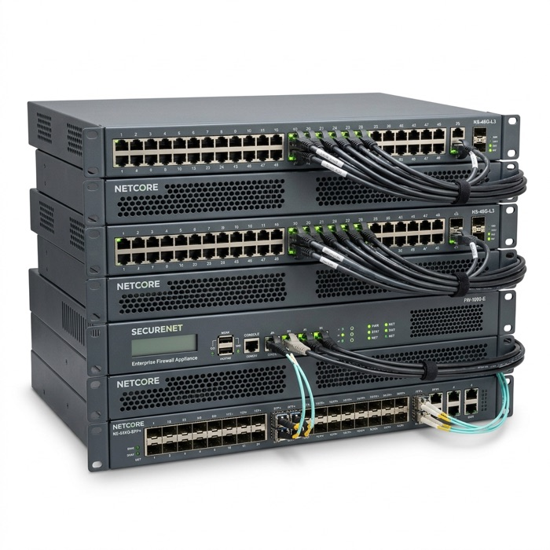

An abstract summary of corporate e-waste processing, raw metal reclamation, and GDPR data destruction audits.
Old IT equipment builds up quickly in a business. You upgrade laptops, retire servers, or find that screens have stopped working, and before long there is a cupboard full of it. It takes up valuable space, and it can still hold data that should not be there.
Clear Cycle IT is an IT recycling company UK organisations use to clear this equipment safely. We collect it from your site, deal with the data, and make sure usable items are reused and the rest is recycled. Our UK IT recycling service takes the work away from your team. You tell us what you have, and we handle the rest, from collection to records.

Whether you are clearing a small office, moving a school computer room or running a full data centre project, we plan the work around your equipment, your site and your timetable.
Business devices often hold customer details, staff records and company files, and deleting those files does not necessarily remove them for good. Before any device is reused or recycled, we deal with the data on it. Suitable devices are wiped, and you receive paperwork showing what we collected, so you have a record of every item that left your site.
Some devices are too old or too damaged to wipe safely. For these, we destroy the data securely and issue a certificate of destruction. You can keep this certificate with your IT and waste records.
A device that still works may be suitable for reuse once it has passed our checks and been wiped. Everything else is recycled responsibly. This cuts electronic waste and recovers materials that can be used again.
Not sure if an item is on the list? Send us the details and we will confirm.

ITAD stands for IT Asset Disposal. It covers every part of getting rid of old equipment safely, from collection and data destruction through to reuse, recycling and paperwork. As an ITAD company, we provide that whole package under one roof, so you do not have to arrange each part separately. You can read more on our IT asset disposal page.
Large organisations rarely keep their equipment in one place. Devices sit in offices, meeting rooms, storage areas and server rooms, and removing them takes planning. We support small clear-outs, planned upgrades and bigger projects across several rooms or sites. Before any work begins, we look at what you have, where it is and when you need it gone.
Old desktops and loose cables take up room that could be used for something else. We agree with you what needs to go, then plan the collection so your staff are disturbed as little as possible.
A system upgrade means extra work for your IT team. We collect and process the old equipment and, on request, can arrange secure data destruction. You then receive complete records for each item removed.
If you have more than one site, contact us to talk through volumes and timings.
There are many IT recycling companies in UK cities and towns. A fair comparison looks at four things: how data is protected, what records you receive, how the collection is organised and what happens to the equipment afterwards.
Suitable devices are wiped, and devices that cannot be wiped safely are destroyed. Which one applies depends on the equipment and its condition.
You do not have to manage everything yourself. Tell us what you have, and our team plans the visit around your equipment and your site.
Reusable equipment stays in use. What cannot be reused goes for responsible recycling, so materials are recovered rather than landfilled.
Our IT recycling UK service is open to eligible organisations across mainland UK. Whether we can collect depends on where you are, what you have and the minimum collection requirement.
Collection is free for eligible businesses and educational customers with at least 10 major IT items. These include laptops, desktop computers, servers and monitors. Smaller accessories do not count towards the minimum. Contact us and we will confirm whether your load qualifies.
The process has five steps.

See also: IT asset disposal, WEEE recycling, secure data destruction, hard drive destruction and IT disposal for schools.
Old equipment should not take up space your company needs. Clear Cycle IT can set up the collection, safeguard the information on your devices and handle the equipment with care.
Send us a list of what you want cleared and we will confirm a collection date.
Ask a member of staff to place all items in one location and to keep a list of the devices. We check the items against your list when we arrive.
Yes. We collect servers, storage devices, routers, switches, and other network equipment, as well as laptops, desktop computers, and monitors.
If it passes our checks and the data has been wiped, it may be reused. Anything that cannot be reused is recycled responsibly.
It depends on the provider. Clear Cycle IT offers free collection for eligible businesses with at least 10 major IT items. Please call or email us, and we will confirm whether any cost applies to your load.
Last Updated: 29th October 2026
IT equipment recycling is the systematic dismantling and material recovery of retired computer hardware. Examples of recycled hardware include laptops, desktop PCs, rackmount servers, and networking switches.
Clearcycle IT executes this process for commercial, educational, and public sector organisations. This service ensures e-waste does not enter municipal landfills but is processed to extract clean raw materials for manufacturing.
Clearcycle IT provides free collection services for UK organisations when the collection inventory contains 10 major IT units. Qualifying major IT units include computers, laptops, servers, and monitors.
Peripheral accessories are collected for free alongside qualifying major units. Examples of peripheral accessories include cables, keyboards, mice, VoIP desk phones, and power adapters.
The Waste Electrical and Electronic Equipment (WEEE) Regulations 2013 partition electrical waste into distinct groups. Business computer hardware is classified under WEEE Category 3: IT and telecommunications equipment. Examples of Category 3 assets include mainframes, printers, copying devices, routers, switches, and central servers.
Category 3 e-waste contains complex composite plastics, cadmium components, lead solder, and brominated flame retardants. Because these materials present environmental hazards, the law mandates their separation at licensed treatment facilities. Processing plants isolate these hazardous substances prior to physical shredding, protecting municipal landfills from toxic runoff.
This classification also covers high-value circuit boards containing precious metals. Recovering Category 3 equipment enables the reclamation of valuable materials. Examples of precious materials recovered from motherboards include copper, silver, palladium, and high-purity gold.
| Hardware Type | Specific Examples | 10-Item Threshold Status |
|---|---|---|
| User Workstations | Laptops, MacBooks, Chromebooks, Desktop PCs, iMacs | Qualifies (Counts toward the 10-unit minimum) |
| Infrastructure Systems | Rackmount servers, blade enclosures, SAN arrays, NAS units | Qualifies (Counts toward the 10-unit minimum) |
| Display Units | LCD monitors, LED displays, interactive smartboards | Qualifies (Counts toward the 10-unit minimum) |
| Networking Gear | Network switches, firewalls, enterprise routers, access points | Accessory (Collected free alongside major units) |
| Office Accessories | Keyboards, mice, desktop printers, VoIP phones, power cords | Accessory (Collected free alongside major units) |
The reclamation of raw materials from corporate IT equipment follows a structured 7-stage sequence. This process recovers materials and neutralises data risks:
The UK Government Waste Hierarchy prioritises the preparation of assets for reuse over physical raw material recycling. Clearcycle IT repairs and refurbishes viable computing equipment. Examples of refurbished assets include enterprise laptops and desktop towers.
Refurbishing a single desktop PC saves approximately 150 kilograms of carbon dioxide emissions by avoiding the manufacturing of new raw metals and plastics. Clearcycle IT generates detailed carbon saving statements for B2B environmental audits, helping clients track their scope 3 emissions reduction targets.
The UK GDPR and Data Protection Act 2018 establish strict rules for handling data-bearing media. Organisations are legally liable for data leaks originating from discarded computers. Clearcycle IT resolves this risk by operating under ISO 27001 data security processes, performing certified data sanitisation on all storage assets prior to material recovery.
Clearcycle IT issues a digital Certificate of Destruction containing serial numbers for every drive wiped or shredded, along with an Environment Agency waste transfer note. This document package verifies WEEE compliance and provides the data controller with a legally auditable record. For more information on environmental transfer notes, please read our WEEE recycling guide or visit our IT asset disposal page.
By choosing a circular-economy-aligned partner for your IT asset disposal, you actively reduce your scope 3 carbon emissions. For every computer that is refurbished and reused rather than manufactured from scratch, we save approximately 150 to 200 kilograms of carbon dioxide equivalents. Our detailed environmental reports translate your recycled tonnage into measurable carbon offsets, supporting your organization's sustainability objectives. This systematic logging enables businesses to demonstrate compliance with UK carbon accounting standards and CSR goals.
Schedule your free collection with Clearcycle IT and secure your Environment Agency documentation.